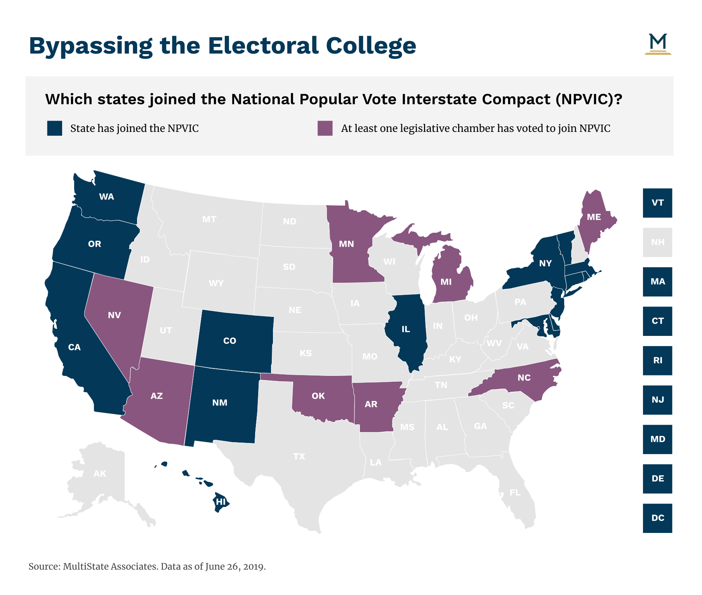

The Popular VoteDisagreement with Popular vote the the electoral collegeWhy was it not a Popular Vote in the First Place?Using the wrong numbersGoing against our ideologyYour vote is not equalDiscouraging voters and “Your vote doesn’t matter”A Few PositivesAn inbetweenNPVIC
The Popular Vote
The term “popular vote” is the kind of simple voting we all are much more familiar with. In this system, everybody would vote, and the candidate with the most votes would win. In many people’s minds, this way of choosing the president is the fairest. It is a constant debate over why the U.S. still uses the electoral college, and there are many complicated parts to the arguments.
Disagreement with Popular vote the the electoral college
One of the points that make many people angry about the electoral college is the fact that it can select a president who doesn’t actually win the popular vote. This can happen if people of the same party are highly concentrated and people of the opposing party are more spread out, but enough to win the popular vote and lose the electoral college. As rare as it might seem, it has happened four different times. The following president, all republicans, won the electoral college but not the popular vote: Donald Trump (2016), George W. Bush (2000), Benjamin Harrison (1888), and Rutherford B. Hayes (1876). Additionally, John Quincey Adams won neither the popular vote nor the electoral college and still became president in the election of 1824.
Why was it not a Popular Vote in the First Place?
We can credit much of the invention of the electoral college to one man, James Madison. Madison helped draft the constitution and was a virginian. Southerners, like Madison, feared that using a popular vote to pick the president would give a lot of power to the northern starters which had a large population of eligible white male voters. Madison thought that if the north become too powerful, they would abolish slavery of which they had much less of than the south. He got around this by creating the electoral college. With this system, the power of each state was based on the population which meant that southern states, which had many slaves, could gain a lot of electoral votes even though their slaves couldn’t vote. Specifically, the electors were calculated with the conversion of one slave equals three fifths of a free man. This original purpose for the electoral college is now far out of date.
Using the wrong numbers
The number of electors in a given state is directly related to the population of the state. This number is based on the census done every decade, which includes non registered voters and minors. Additionally, the number of electors has nothing to do with voter turnout. Because of these things, the number of people voting may not accurately represent the number of electoral votes. For example, if a state had extremely low voter turnout, then a single vote would be worth much more than normal or other states. As a different example, let us have state A and state B. State A has much more electoral votes than state B, but its voter turnout is extremely low. Then, winning state A, which would be more beneficial than state B, requires much less votes than winning state B. If we instead used a popular vote, all of these misrepresentations of the amount of voters would be gone.
Going against our ideology
By not directly using the popular vote, we are using a democratic republic as we are essentially electing officials to make our decisions to who should be president. This greatly goes against the main core of our American values which is democracy.
You're vote isn’t equal
One part of the electoral college system that can scare people is that their votes aren’t equal. The main reason for this is the fact that the number of electoral votes is a calculation of the population and adding two. For example, if x was the population of a state and y was the amount of people in each congressional district(this number is constant throughout the nation), there would be x/y congressional districts. We add 2 to get the number of electoral votes to be x/y + 2 and divided by x to find the amount of electoral votes per person. We get (x/y + 2)/x = 1/y + 2/x. Since y is constant, 1/y is constant so we let c = 1/y. Then the number of electoral votes that each person has in a state of x people is c + 2/x (Note that the state is still winner take all so this representation of splitting up the electoral votes into the entire population isn't completely accurate, but can be used to prove the point.) As x grows, the amount of electoral votes that each person “has” gets smaller and smaller. This means that a person in a less populous state has more voting power than a person in a more populous state. For example, in New York, it is about 519,075 people for each elector while in Wyoming, it is only 142,741 people for each elector. Once again, the popular vote would solve all of these problems with each vote being exactly the same.
Discouraging voters and “Your vote doesn’t matter”
Since the electoral college system is a winner take all system, it can discourage some people from voting. This can happen in states that normally side with a particular party. For example, if a republican lives in California, which is a very blue state, they might think that voting for the republican candidate won’t matter and might decide not to. Because of this, the electoral college makes it so some votes in particular states “don’t matter”. This, again, takes away from the democracy that America is supposed to be and it could be fixed by using the popular vote.
A Few Positives
Though the electoral college is mostly thought of as a convoluted way to pick the president, there are a few positive factors. One of the biggest upsides to the system is that it forces candidates to appeal to the entire nation. If a candidate only focuses on the likes and needs of a single region, it won’t be able to win the presidency, which is a good thing. Because of the layout of the electoral votes, there is no region with 270 votes meaning that candidates must focus on the entire nation. If the nation used the popular vote instead, candidates could focus only on specific regions and still win. Another positive of the electoral college is that it can minimize costs for campaigning. Because of the system, candidates wouldn’t spend much money campaigning in states that they historically know that they will win, which cuts back on spending and funding. For example, a republican wouldn’t spend very much money on campaigns in Texas as it is normally a red state. If the country instead used the popular vote, a republican candidate might have to spend more money compaigning in areas that he/she is less popular.
Attempts to Change
Because of the reasons stated and many others, many people have tried to change the electoral college or completely abolish it for a popular vote. This, however, would require a constitutional amendment meaning that it has to have a two thirds majority in the house and be ratified by three fourths of the state legislatures. There have been over 700 proposed amendments to the electoral college presented to congress, but very few have gone through. Many of these attempts have come close to getting the two thirds majority of congress. Some easily get through the senate and fail in the house and some do the opposite, get through the house and fail at the senate due to filibusters. Only two of the many proposals have made it to the ratification process in which both of them passed and are now amendments. These amendments are the 12th and 23rd.
An inbetween
Many of the proposed amendments include a portional electoral vote system, which lies between the popular vote and the current electoral college. In this system, the electors are still present, but they vote in a proportional amount to the state. For example, if 37% of the state was red and the other 63% was blue, then about 37% of the electors would vote red and the others would vote blue. This somewhat mimics the system already in place in Maine and Nebraska.
NPVIC
Although amending the electoral college is quite difficult, there is a way to work around it to have the result of a popular vote. The NPVIC (National Popular Vote Interstate Compact) is a system in which electors are bound to vote for not what their state votes for, but for the popular vote of the entire nation. The NPVIC currently has 15 different states and DC. The process of overriding the states vote to get the true popular, and most democratic, vote will only happen if the NPVIC has enough states to get 270 electoral votes. If it does, it ensures that the popular vote chooses the president while still keeping the electoral college. Currently, the NPVIC has 195 electoral votes.

Above shows an image of the states who joined the NPVIC (Blue) and the states who have at least one legestlative chamber who voted to be part of NPVIC.